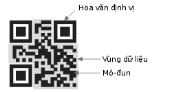

QR CODE LÀ GÌ?
Đôi chút về QR Code.
- QR Code là một mã ma trận hay được gọi là mã vạch hai chiều, được xây dựng từ năm 1994 bởi công ty Denso Wave (Nhật Bản) nhằm mục đích giải mã ma trận nhanh với tốc độ cao. Ban đầu, ứng dụng QR Code chủ yếu dùng vào việc quản lý kiểm kê ở nhiều ngành nghề khác nhau và được sử dụng nhiều nhất ở Nhật Bản, tuy nhiên ngày nay ứng dụng của nó được phát triển ở hầu hết mọi lĩnh vực và lan rộng ra nhiều quốc gia trên thế giới.Cấu trúc của mã QR
Cấu trúc của một ký hiệu mã QR. Nhờ các hoa văn định vị, mã QR có thể được đọc ở 360°.
- Khả năng lưu trữ dữ liệu mã QRcode
+ Số đơn thuần: Tối đa 7.089 kí tự.
+ Số và chữ cái: Tối đa 4.296 kí tự.
+ Số nhị phân (8 bit): Tối đa 2.953 byte.
+ Kanji/Kana: Tối đa 1.817 kí tự.
- Một máy giải mã QR có thể đọc 70% nội dung mã là đủ hiểu mã nói gì, với 30% còn lại, các nhà thiết kế tha hồ cá nhân hoá mã của công ty mình, giúp cho việc quảng cáo được hiệu quả hơn. Khả năng sửa chữa lỗi
+ Mức L: 7% số từ mã (codeword) có thể được phục hồi.
+ Mức M: 15% số từ mã có thể được phục hồi.
+ Mức Q: 25% số từ mã có thể được phục hồi.
+ Mức H: 30% số từ mã có thể được phục hồi.
QR là từ viết tắt của Quick Response (tạm dịch “Mã phản hồi nhanh”).
Đây là một ma trận mã vạch có thể được đọc bởi máy đọc mã vạch hay smartphone (điện thoại thông minh) có chức năng chụp ảnh với ứng dụng chuyên biệt để quét mã vạch. QR code gồm những module màu đen được xắp xếp ngẫu nhiên trong một ô vuông có nền trắng. Sự tổ hợp những module này mã hóa cho bất kì dữ liệu trực tuyến bao gồm: link dẫn đến trang web, hình ảnh, thông tin, chi tiết về sản phẩm, quảng cáo cho sản phẩm.v.v...QR được tạo ra để làm gì?
QR code dùng để kiểm kê hàng hóa, thông tin sản phẩm trong kho; thông tin cá nhân: trên card visit; lưu trữ URL: điện thoại chỉ việc đọc QR Code để lấy URL, sau đó tự động mở trình duyệt; dử dụng tại các bến xe bus, xe lửa, tàu điện ngầm: người sử dụng khi quét mã QR Code của bến xe sẽ biết thông tin về các chuyến xe; sử dụng tại các Viện bảo tàng: người sử dụng chỉ cần quét mã QR Code đặt cạnh vật trưng bày là biết được thông tin chi tiết và cập nhật về đồ vật đó; sử dụng để mua hàng ở bất kỳ đâu: người sử dụng khi đi tàu điện ngầm, xe bus … nếu thấy thích mặt hàng đang quảng cáo trên đó có thể đặt mua ngay lập tức thông qua QR Code và Mobile Internet..v.v…